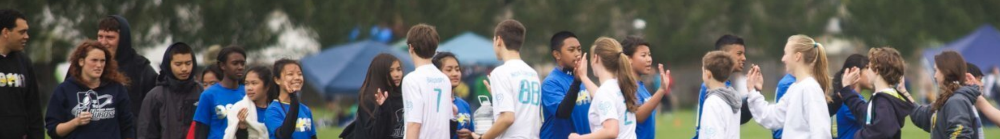
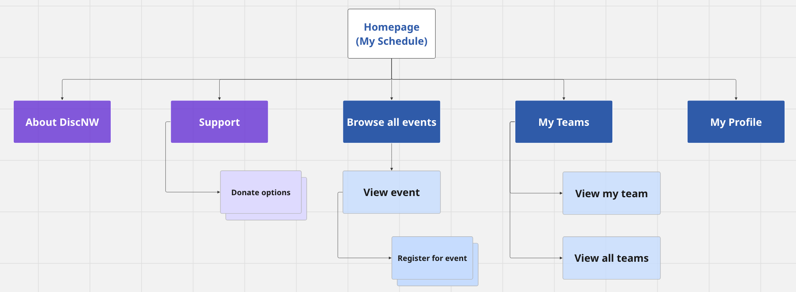
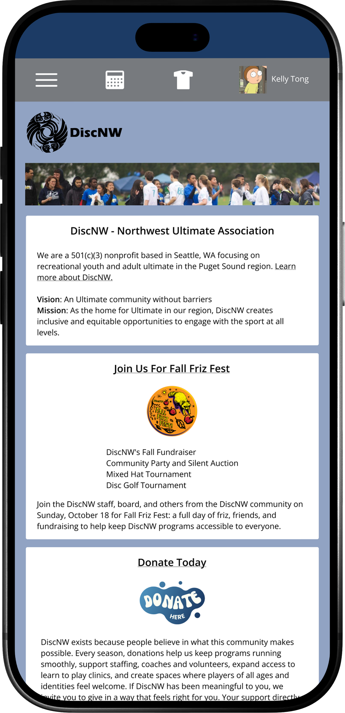
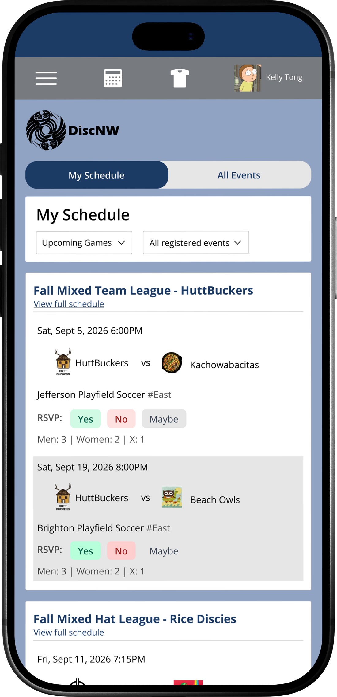
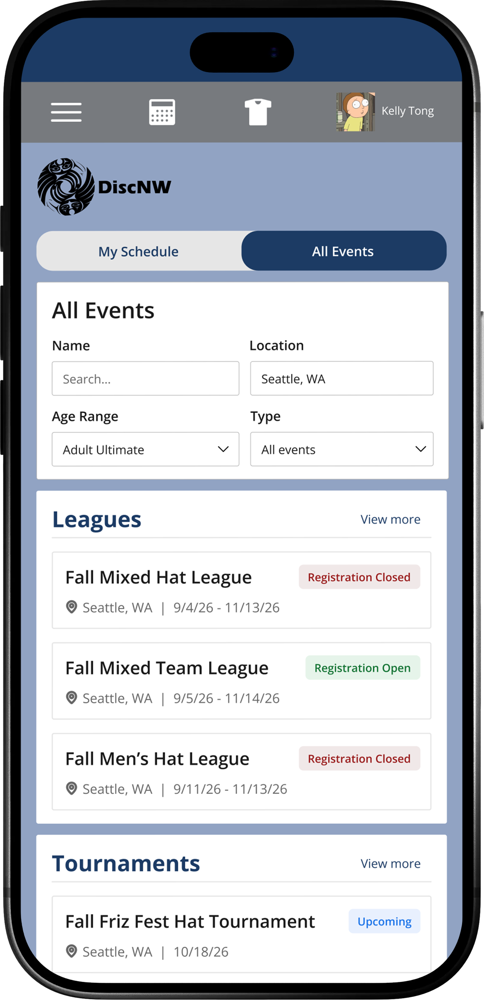
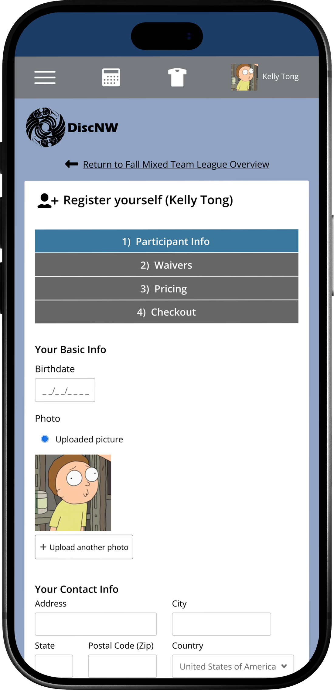
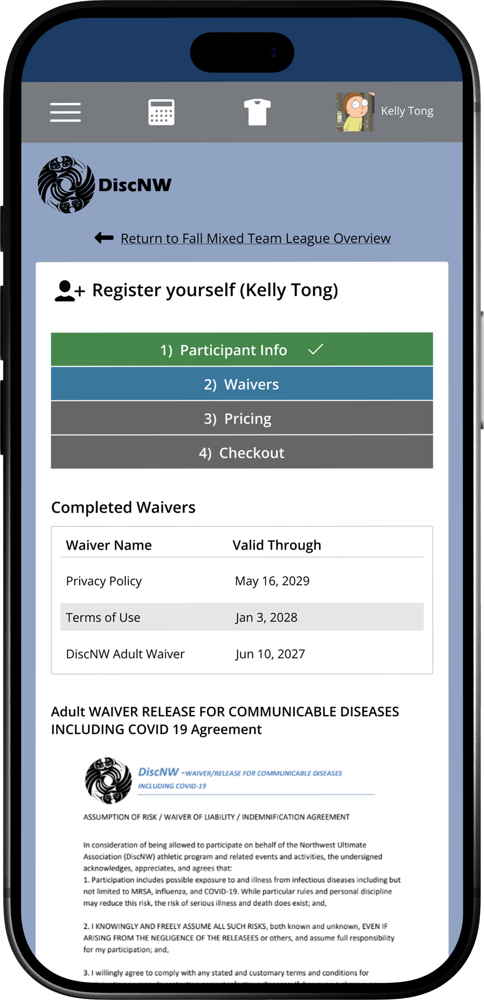
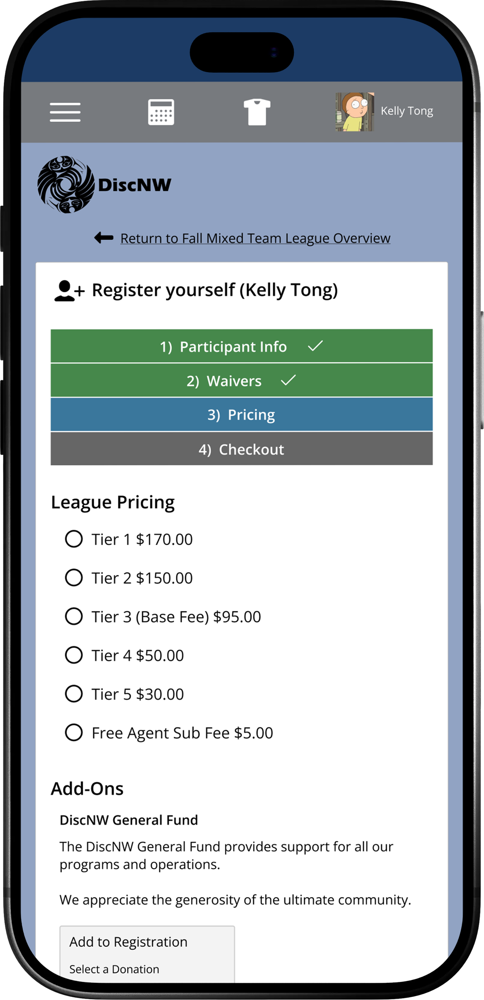
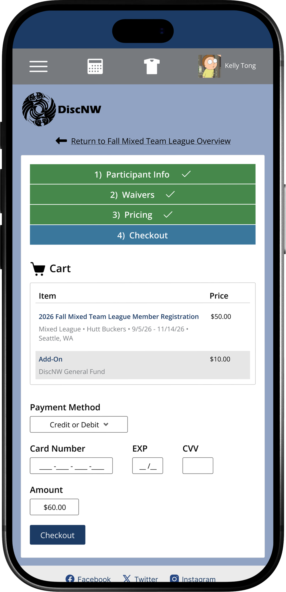
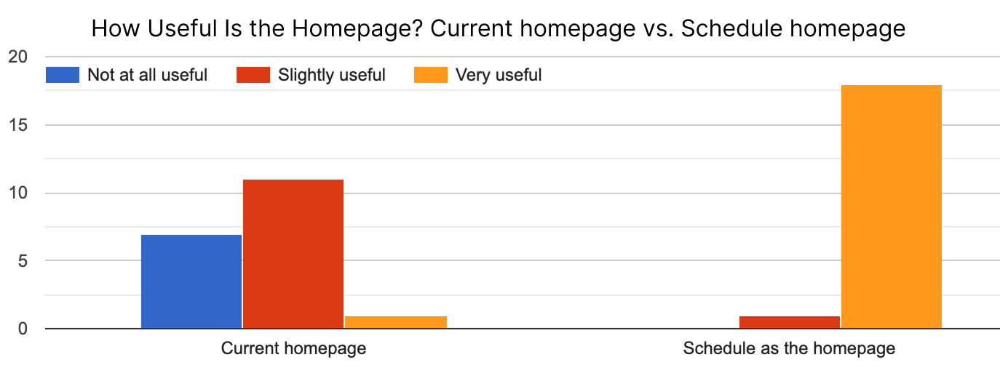

DiscNW Mobile Redesign

Bringing together DiscNW's event discovery and player schedules into one clear, organized experience.

Bringing together DiscNW's event discovery and player schedules into one clear, organized experience.
UX Designer
Aug 2026 - Nov 2026
Mobile Design
Prototyping
Interaction Design
DiscNW is a Seattle-based nonprofit dedicated to making Ultimate accessible and welcoming to players of all backgrounds. As the organization has grown, so has the range of what it offers including leagues, camps, and events for players of every age and skill level.
But the website hasn't kept pace with that growth. Leagues, camps, and events are presented together in long, uniform lists, without the visual hierarchy or filtering that would help players quickly find what's relevant to them. There's an opportunity to redesign the site so it reflects the same accessibility and sense of community DiscNW offers on the field.
To gain a better understanding of how adult ultimate players use and interact with the DiscNW website I conducted semi-structured 1:1 interviews. I asked 10 questions covering registration, navigation, and event discovery.
Finding and registering for events was a main pain point for users. Participants described unnecessarily long paths to register, with relevant information towards the bottom.
Users land on a homepage built around promotional and general Ultimate information, where personalized content and actionable items are buried.
An abundant amount of available events on the site but lacks relevant filters to help narrow search.
Simplify registration — integrate related steps into a single step to reduce the registration process
Surface what's personal and relevant at the top of the page, leading with users' event information before any browse or discovery content.
Reorganize how information is presented with clear headings and sections including filters to search for specific events.


The original homepage had a lot of informative content, so I kept all of it and focused on organizing it. The mission, programs, and ways to get involved now live in their own sections. Someone new to DiscNW, or to Ultimate in general, can get a sense of who the organization is without feeling overwhelmed.

When I looked at how people use the DiscNW site, the main thing they want to know is simple: when and where is their next game. So I made the schedule the first thing you see. Games are grouped by date with the details below, so returning players don’t have to search through menus to find their league.

DiscNW runs a lot of different events, from leagues to tournaments, and on the old site they’re all in one list. Here, each type of event gets its own section, so it’s easy to skim and compare. I paid close attention to hierarchy so the key details jump out instead of getting lost in big blocks of text.
Signing up should be the easy part of playing. I streamlined registration into a few short steps and only ask for what’s needed. Fewer steps means less chance of people getting stuck or pausing halfway through.




I shared the interactive prototype with DiscNW players through a short survey. Participants explored the schedule screen, events page, and the registration flow, then rated each part. All 19 survey respondents were adult players, and most were phone users who had played with DiscNW for more than three years.
"Relevant info is more central. The first thing I see is my schedule."
"It's in the forefront, saves time and clicks."
The biggest change I made was making the schedule screen the first thing players see. 17 out of 19 rated the schedule homepage higher than the current one. This matches what I found in my research, where the current homepage led with general information, donating, and Ultimate content, while nearly everyone I tested came to check their schedule or register.

Players usually came to the site to register for their events. In my prototype, I combined a few steps in the registration flow to reduce the number of steps it would take to complete.
| What I tested | Result |
|---|---|
| Ease of registration | 4.3 / 5 average |
| Clarity of registration steps | 4.5 / 5 average |
| Prototype registration process compared to the current site | 11 said easier, 7 about the same, 1 harder |
| Number of registration steps: | 15 / 19 said about right |
These results come from 19 adult players, mostly returning users, so I can't say how well the design works for first-time players, parents, or youth. Some prototype buttons weren't working yet, which affected a few things. Next time I'd include newer players and test the browsing flow directly.
This project taught me how much of good design is just organizing information well. DiscNW already had the content people needed, and the biggest improvements came from deciding what to put first and cutting extra steps. Next time I’d pair surveys with facilitated usability tests so I can observe people use the prototype in real time.